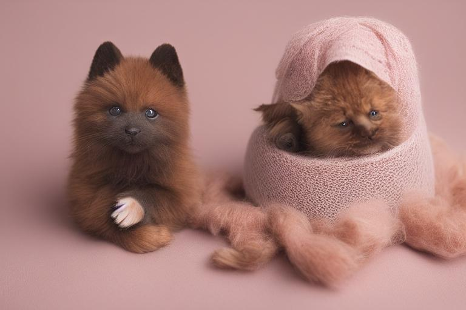

Comment organiser un entretien annuel avec un vétérinaire pour votre animal
Photo: TheDigitalArtist / Pixabay
Bienvenue dans votre rôle de nouveau propriétaire d'un animal de compagnie. Pour garantir une santé optimale de votre ami à quatre pattes, un entretien annuel avec un vétérinaire est essentiel. Ce guide vous aidera à organiser efficacement cette rendez-vous, assurant ainsi que votre animal est bien entretenu et en bonne santé.
Planifiez le rendez-vous à la bonne saison

Il est recommandé d'organiser l'entretien annuel de votre animal de compagnie vers la fin de l'été ou au début de l'automne. Cela vous permet de profiter de la stabilité des conditions météorologiques et d'éviter les surcharges de consultation en été, où le nombre de consultations peut augmenter considérablement.
Préparez une liste d'observations
Anticiper la visite vétérinaire signifie également préparer une liste d'observations. Notez tout changement d'appétit, de comportement, de niveau d'énergie ou de signes de maladie que vous avez remarqués chez votre animal. Cette liste vous aidera à ne pas oublier de mentionner un détail crucial. Par exemple, si votre chien a eu des vomissements trois fois en une semaine, n'hésitez pas à en parler.
Exemple : Préparation d'une liste d'observations pour un chat
Prenons l'exemple d'un chat. Vous avez remarqué des vomissements chez votre chat. Il est sédentaire ces derniers temps, alors qu'il est habituellement très actif. Vous avez également noté une perte de poids significative. Ces observations sont précieuses pour le vétérinaire qui pourra évaluer plus facilement l'état de santé de votre chat et orienter des tests appropriés.
Assurez-vous que votre animal est immunisé
En général, l'entretien annuel vétérinaire comprend une évaluation de l'état de santé général de votre animal, un examen physique complet et une revaccination si nécessaire. Certains vaccins sont nécessaires chaque année, tandis que d'autres, comme ceux contre la rage, peuvent être administrés tous les trois ans.
Par exemple, pour un chien, il est conseillé d'administrer des vaccins tels que le vaccin contre la rage (une fois par an) et le vaccin contre la hépatite canine (tous les trois ans). Pour un chat, le vaccin contre la rage est également administré une fois par an, tout comme le vaccin contre le calicivirus et le herpesvirus (tous les trois ans).
Assurez-vous de la bonne hygiène de vie
Lors de la consultation, faites également part de l'hygiène de vie de votre animal. Par exemple, la durée de la marche quotidienne devrait être d'environ 30 minutes pour un chien adulte, plus si vous voulez favoriser l'activité physique. Pour un chat, assurez-vous qu'il a accès à un espace de jeu et d'exploration chaque jour.
Préparez votre animal pour l'examen
Pour une évaluation optimale de l'état de santé de votre animal, assurez-vous qu'il est propre et bien brossé. Chez les chiens, un bain tous les trois mois est généralement recommandé, tandis que les chats peuvent se laver eux-mêmes, mais vous pouvez les aider à le faire s'ils ont des difficultés.
Exemple : Préparation d'un chien pour l'examen vétérinaire
Imaginez que vous devez emmener votre chien dans un entretien annuel. Avant la visite, assurez-vous qu'il est propre. En général, un bain tous les trois mois suffit pour un chien. Pour la visite, prenez-le avec un gant de bain à chat pour l'essuyer et le rafraîchir, car les chiens sont souvent trop excités pour un bain complet. Vous pouvez également préparer un bonnet pour éviter qu'il ne fasse pas de bouc.
Prenez des photos de santé
Enfin, prenez des photos régulières de votre animal. Cela vous aidera à repérer les changements en matière de poids, de forme, de couleur de la peau et de l'état de la poils. Par exemple, en prenant une photo de votre chien chaque mois, vous pouvez remarquer une perte de poids subite ou des changements de comportement qui pourraient ne pas être immédiatement perceptibles.
Conclusion
Organiser un entretien annuel avec un vétérinaire est une étape importante pour garantir la santé et le bonheur de votre animal de compagnie. En suivant ces conseils, vous serez bien préparé pour cette visite et pourront bénéficier d'une évaluation optimale de l'état de santé de votre ami à quatre pattes.
Produits recommandés
En tant que Partenaire Amazon, je réalise un bénéfice sur les achats remplissant les conditions requises.